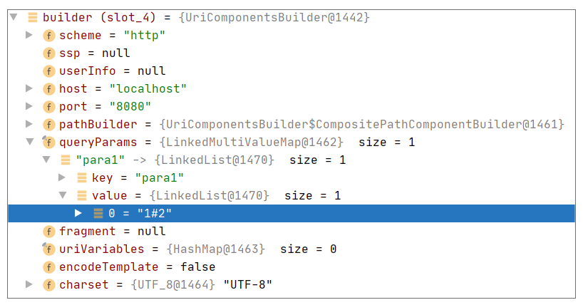
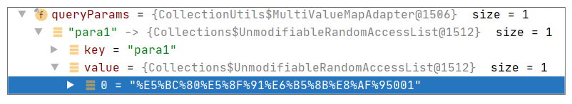

- 00 导读 5分钟轻松了解Spring基础知识.md.html
- 00 开篇词 贴心“保姆”Spring罢工了怎么办？.md.html
- 01 Spring Bean 定义常见错误.md.html
- 02 Spring Bean 依赖注入常见错误（上）.md.html
- 03 Spring Bean 依赖注入常见错误（下）.md.html
- 04 Spring Bean 生命周期常见错误.md.html
- 05 Spring AOP 常见错误（上）.md.html
- 06 Spring AOP 常见错误（下）.md.html
- 07 Spring事件常见错误.md.html
- 08 答疑现场：Spring Core 篇思考题合集.md.html
- 09 Spring Web URL 解析常见错误.md.html
- 10 Spring Web Header 解析常见错误.md.html
- 11 Spring Web Body 转化常见错误.md.html
- 12 Spring Web 参数验证常见错误.md.html
- 13 Spring Web 过滤器使用常见错误（上）.md.html
- 14 Spring Web 过滤器使用常见错误（下）.md.html
- 15 Spring Security 常见错误.md.html
- 16 Spring Exception 常见错误.md.html
- 17 答疑现场：Spring Web 篇思考题合集.md.html
- 18 Spring Data 常见错误.md.html
- 19 Spring 事务常见错误（上）.md.html
- 20 Spring 事务常见错误（下）.md.html
- 21 Spring Rest Template 常见错误.md.html
- 22 Spring Test 常见错误.md.html
- 23 答疑现场：Spring 补充篇思考题合集.md.html
- 导读 5分钟轻松了解一个HTTP请求的处理过程.md.html
- 知识回顾 系统梳理Spring编程错误根源.md.html
- 结束语 问题总比解决办法多.md.html
- 捐赠
21 Spring Rest Template 常见错误
你好，我是傅健。
前面几节课，我们介绍了一个 Spring 微服务使用数据库过程中可能遇到的常见错误。而实际上，除了直接使用数据库外，使用其他微服务来完成功能也是一个常见的应用场景。
一般而言，微服务之间的通信大多都是使用 HTTP 方式进行的，这自然少不了使用 HttpClient。在不使用 Spring 之前，我们一般都是直接使用 Apache HttpClient 和 Ok HttpClient 等，而一旦你引入 Spring，你就有了一个更好的选择，这就是我们这一讲的主角 RestTemplate。那么在使用它的过程中，会遇到哪些错误呢？接下来我们就来总结下。
案例 1：参数类型是 MultiValueMap
首先，我们先来完成一个 API 接口，代码示例如下：
@RestController
public class HelloWorldController {
@RequestMapping(path = "hi", method = RequestMethod.POST)
public String hi(@RequestParam("para1") String para1, @RequestParam("para2") String para2){
return "helloworld:" + para1 + "," + para2;
};
}
这里我们想完成的功能是接受一个 Form 表单请求，读取表单定义的两个参数 para1 和 para2，然后作为响应返回给客户端。
定义完这个接口后，我们使用 RestTemplate 来发送一个这样的表单请求，代码示例如下：
RestTemplate template = new RestTemplate();
Map<String, Object> paramMap = new HashMap<String, Object>();
paramMap.put("para1", "001");
paramMap.put("para2", "002");
String url = "http://localhost:8080/hi";
String result = template.postForObject(url, paramMap, String.class);
System.out.println(result);
上述代码定义了一个 Map，包含了 2 个表单参数，然后使用 RestTemplate 的 postForObject 提交这个表单。
测试后你会发现事与愿违，返回提示 400 错误，即请求出错：
具体而言，就是缺少 para1 表单参数。为什么会出现这个错误呢？我们提交的表单最后又成了什么？
案例解析
在具体解析这个问题之前，我们先来直观地了解下，当我们使用上述的 RestTemplate 提交表单，最后的提交请求长什么样？这里我使用 Wireshark 抓包工具直接给你抓取出来：
从上图可以看出，我们实际上是将定义的表单数据以 JSON 请求体（Body）的形式提交过去了，所以我们的接口处理自然取不到任何表单参数。
那么为什么会以 JSON 请求体来提交数据呢？这里我们不妨扫一眼 RestTemplate 中执行上述代码时的关键几处代码调用。
首先，我们看下上述代码的调用栈：

确实可以验证，我们最终使用的是 Jackson 工具来对表单进行了序列化。使用到 JSON 的关键之处在于其中的关键调用 RestTemplate.HttpEntityRequestCallback#doWithRequest：
public void doWithRequest(ClientHttpRequest httpRequest) throws IOException {
super.doWithRequest(httpRequest);
Object requestBody = this.requestEntity.getBody();
if (requestBody == null) {
//省略其他非关键代码
}
else {
Class<?> requestBodyClass = requestBody.getClass();
Type requestBodyType = (this.requestEntity instanceof RequestEntity ?
((RequestEntity<?>)this.requestEntity).getType() : requestBodyClass);
HttpHeaders httpHeaders = httpRequest.getHeaders();
HttpHeaders requestHeaders = this.requestEntity.getHeaders();
MediaType requestContentType = requestHeaders.getContentType();
for (HttpMessageConverter<?> messageConverter : getMessageConverters()) {
if (messageConverter instanceof GenericHttpMessageConverter) {
GenericHttpMessageConverter<Object> genericConverter =
(GenericHttpMessageConverter<Object>) messageConverter;
if (genericConverter.canWrite(requestBodyType, requestBodyClass, requestContentType)) {
if (!requestHeaders.isEmpty()) {
requestHeaders.forEach((key, values) -> httpHeaders.put(key, new LinkedList<>(values)));
}
logBody(requestBody, requestContentType, genericConverter);
genericConverter.write(requestBody, requestBodyType, requestContentType, httpRequest);
return;
}
}
else if (messageConverter.canWrite(requestBodyClass, requestContentType)) {
if (!requestHeaders.isEmpty()) {
requestHeaders.forEach((key, values) -> httpHeaders.put(key, new LinkedList<>(values)));
}
logBody(requestBody, requestContentType, messageConverter);
((HttpMessageConverter<Object>) messageConverter).write(
requestBody, requestContentType, httpRequest);
return;
}
}
String message = "No HttpMessageConverter for " + requestBodyClass.getName();
if (requestContentType != null) {
message += " and content type \"" + requestContentType + "\"";
}
throw new RestClientException(message);
}
}
上述代码看起来比较复杂，实际上功能很简单：根据当前要提交的 Body 内容，遍历当前支持的所有编解码器，如果找到合适的编解码器，就使用它来完成 Body 的转化。这里我们不妨看下 JSON 的编解码器对是否合适的判断，参考 AbstractJackson2HttpMessageConverter#canWrite：

可以看出，当我们使用的 Body 是一个 HashMap 时，是可以完成 JSON 序列化的。所以在后续将这个表单序列化为请求 Body 也就不奇怪了。
但是这里你可能会有一个疑问，为什么适应表单处理的编解码器不行呢？这里我们不妨继续看下对应的编解码器判断是否支持的实现，即 FormHttpMessageConverter#canWrite：
public boolean canWrite(Class<?> clazz, @Nullable MediaType mediaType) {
if (!MultiValueMap.class.isAssignableFrom(clazz)) {
return false;
}
if (mediaType == null || MediaType.ALL.equals(mediaType)) {
return true;
}
for (MediaType supportedMediaType : getSupportedMediaTypes()) {
if (supportedMediaType.isCompatibleWith(mediaType)) {
return true;
}
}
return false;
}
从上述代码可以看出，实际上，只有当我们发送的 Body 是 MultiValueMap 才能使用表单来提交。学到这里，你可能会豁然开朗。原来使用 RestTemplate 提交表单必须是 MultiValueMap，而我们案例定义的就是普通的 HashMap，最终是按请求 Body 的方式发送出去的。
问题修正
其实上面解释了那么多，相信你肯定知道怎么去解决这个问题了，其实很简单，把案例中的 HashMap 换成一个 MultiValueMap 类型来存储表单数据即可。修正代码示例如下：
//错误：
//Map<String, Object> paramMap = new HashMap<String, Object>();
//paramMap.put("para1", "001");
//paramMap.put("para2", "002");
//修正代码：
MultiValueMap<String, Object> paramMap = new LinkedMultiValueMap<String, Object>();
paramMap.add("para1", "001");
paramMap.add("para2", "002");
最终你会发现，当完成上述修改后，表单数据最终使用下面的代码进行了编码，参考 FormHttpMessageConverter#write：
public void write(MultiValueMap<String, ?> map, @Nullable MediaType contentType, HttpOutputMessage outputMessage)
throws IOException, HttpMessageNotWritableException {
if (isMultipart(map, contentType)) {
writeMultipart((MultiValueMap<String, Object>) map, contentType, outputMessage);
}
else {
writeForm((MultiValueMap<String, Object>) map, contentType, outputMessage);
}
}
发送出的数据截图如下：

这样就满足我们的需求了。
实际上，假设你仔细看文档的话，你可能也会规避这个问题，文档关键行如下：
The body of the entity, or request itself, can be a MultiValueMap to create a multipart request. The values in the MultiValueMap can be any Object representing the body of the part, or an HttpEntity
相信不用我讲，你也能看明白它说的正是我们刚刚费尽口舌去解释的事情。很多人还会犯错的原因大多都是没有耐心去看，或者懒得去看，更喜欢去“想当然”。在Spring 的使用上，这点是大忌。
案例 2：当 URL 中含有特殊字符
接下来，我们再来看一个关于 RestTemplate 使用的问题。我们还是使用之前类型的接口定义，不过稍微简化一下，代码示例如下：
@RestController
public class HelloWorldController {
@RequestMapping(path = "hi", method = RequestMethod.GET)
public String hi(@RequestParam("para1") String para1){
return "helloworld:" + para1;
};
}
不需要我多介绍，你大体应该知道我们想实现的功能是什么了吧，无非就是提供一个带“参数”的 HTTP 接口而已。
然后我们使用下面的 RestTemplate 相关代码来测试一下：
String url = "http://localhost:8080/hi?para1=1#2";
HttpEntity<?> entity = new HttpEntity<>(null);
RestTemplate restTemplate = new RestTemplate();
HttpEntity<String> response = restTemplate.exchange(url, HttpMethod.GET,entity,String.class);
System.out.println(response.getBody());
当你看到这段测试代码，你觉得会输出什么呢？相信你很可能觉得是：
helloworld:1#2
但是实际上，事与愿违，结果是：
helloworld:1
即服务器并不认为 #2 是 para1 的内容。如何理解这个现象呢？接下来我们可以具体解析下。
案例解析
类似案例 1 解析的套路，在具体解析之前，我们可以先直观感受下问题出在什么地方。我们使用调试方式去查看解析后的 URL，截图如下：

可以看出，para1 丢掉的 #2 实际是以 Fragment 的方式被记录下来了。这里顺便科普下什么是 Fragment，这得追溯到 URL 的格式定义：
protocol://hostname[:port]/path/[?query]#fragment
本案例中涉及到的两个关键元素解释如下：
- Query（查询参数）
页面加载请求数据时需要的参数，用 & 符号隔开，每个参数的名和值用 = 符号隔开。
- Fragment（锚点）
#开始，字符串，用于指定网络资源中的片断。例如一个网页中有多个名词解释，可使用 Fragment 直接定位到某一名词的解释。例如定位网页滚动的位置，可以参考下面一些使用示例：
http://example.com/data.csv#row=4 – Selects the 4th row.- http://example.com/data.csv#col=2 – Selects 2nd column.
了解了这些补充知识后，我们其实就能知道问题出在哪了。不过本着严谨的态度，我们还是翻阅下源码。首先，我们先看下 URL 解析的调用栈，示例如下：

参考上述调用栈，解析 URL 的关键点在于 UriComponentsBuilder#fromUriString 实现：
private static final Pattern URI_PATTERN = Pattern.compile(
"^(" + SCHEME_PATTERN + ")?" + "(//(" + USERINFO_PATTERN + "@)?" + HOST_PATTERN + "(:" + PORT_PATTERN +
")?" + ")?" + PATH_PATTERN + "(\\?" + QUERY_PATTERN + ")?" + "(#" + LAST_PATTERN + ")?");
public static UriComponentsBuilder fromUriString(String uri) {
Matcher matcher = URI_PATTERN.matcher(uri);
if (matcher.matches()) {
UriComponentsBuilder builder = new UriComponentsBuilder();
String scheme = matcher.group(2);
String userInfo = matcher.group(5);
String host = matcher.group(6);
String port = matcher.group(8);
String path = matcher.group(9);
String query = matcher.group(11);
String fragment = matcher.group(13);
//省略非关键代码
else {
builder.userInfo(userInfo);
builder.host(host);
if (StringUtils.hasLength(port)) {
builder.port(port);
}
builder.path(path);
builder.query(query);
}
if (StringUtils.hasText(fragment)) {
builder.fragment(fragment);
}
return builder;
}
else {
throw new IllegalArgumentException("[" + uri + "] is not a valid URI");
}
}
从上述代码实现中，我们可以看到关键的几句，这里我摘取了出来：
String query = matcher.group(11);
String fragment = matcher.group(13);
很明显，Query 和 Fragment 都有所处理。最终它们根据 URI_PATTERN 各自找到了相应的值 (1和2)，虽然这并不符合我们的原始预期。
问题修正
那么怎么解决这个问题呢? 如果你不了解 RestTemplate 提供的各种 URL 组装方法，那你肯定是有点绝望的。这里我给出了代码修正方法，你可以先看看：
String url = "http://localhost:8080/hi?para1=1#2";
UriComponentsBuilder builder = UriComponentsBuilder.fromHttpUrl(url);
URI uri = builder.build().encode().toUri();
HttpEntity<?> entity = new HttpEntity<>(null);
RestTemplate restTemplate = new RestTemplate();
HttpEntity<String> response = restTemplate.exchange(uri, HttpMethod.GET,entity,String.class);
System.out.println(response.getBody());
最终测试结果符合预期：
helloworld:1#2
与之前的案例代码进行比较，你会发现 URL 的组装方式发生了改变。但最终可以获取到我们预期的效果，调试视图参考如下：

可以看出，参数 para1 对应的值变成了我们期待的”1#2”。
如果你想了解更多的话，还可以参考 UriComponentsBuilder#fromHttpUrl，并与之前使用的 UriComponentsBuilder#fromUriString 进行比较：
private static final Pattern HTTP_URL_PATTERN = Pattern.compile(
"^" + HTTP_PATTERN + "(//(" + USERINFO_PATTERN + "@)?" + HOST_PATTERN + "(:" + PORT_PATTERN + ")?" + ")?" +
PATH_PATTERN + "(\\?" + LAST_PATTERN + ")?")
public static UriComponentsBuilder fromHttpUrl(String httpUrl) {
Assert.notNull(httpUrl, "HTTP URL must not be null");
Matcher matcher = HTTP_URL_PATTERN.matcher(httpUrl);
if (matcher.matches()) {
UriComponentsBuilder builder = new UriComponentsBuilder();
String scheme = matcher.group(1);
builder.scheme(scheme != null ? scheme.toLowerCase() : null);
builder.userInfo(matcher.group(4));
String host = matcher.group(5);
if (StringUtils.hasLength(scheme) && !StringUtils.hasLength(host)) {
throw new IllegalArgumentException("[" + httpUrl + "] is not a valid HTTP URL");
}
builder.host(host);
String port = matcher.group(7);
if (StringUtils.hasLength(port)) {
builder.port(port);
}
builder.path(matcher.group(8));
builder.query(matcher.group(10));
return builder;
}
else {
throw new IllegalArgumentException("[" + httpUrl + "] is not a valid HTTP URL");
}
}
可以看出，这里只解析了Query并没有去尝试解析 Fragment，所以最终获取到的结果符合预期。
通过这个例子我们可以知道，当 URL 中含有特殊字符时，一定要注意 URL 的组装方式，尤其是要区别下面这两种方式：
UriComponentsBuilder#fromHttpUrl- UriComponentsBuilder#fromUriString
案例 3：小心多次 URL Encoder
接下来，我们继续看一个案例，这里完全沿用之前的接口：
@RestController
public class HelloWorldController {
@RequestMapping(path = "hi", method = RequestMethod.GET)
public String hi(@RequestParam("para1") String para1){
return "helloworld:" + para1;
};
}
然后我们可以换一种使用方式来访问这个接口，示例如下：
RestTemplate restTemplate = new RestTemplate();
UriComponentsBuilder builder = UriComponentsBuilder.fromHttpUrl("http://localhost:8080/hi");
builder.queryParam("para1", "开发测试 001");
String url = builder.toUriString();
ResponseEntity<String> forEntity = restTemplate.getForEntity(url, String.class);
System.out.println(forEntity.getBody());
我们期待的结果是”helloworld:开发测试 001”，但是运行上述代码后，你会发现结果却是下面这样：
helloworld:%E5%BC%80%E5%8F%91%E6%B5%8B%E8%AF%95001
如何理解这个问题呢？
案例解析
要了解这个案例，我们就需要对上述代码中关于 URL 的处理有个简单的了解。首先我们看下案例中的代码调用：
String url = builder.toUriString();
它执行的方式是 UriComponentsBuilder#toUriString：
public String toUriString() {
return this.uriVariables.isEmpty() ?
build().encode().toUriString() :
buildInternal(EncodingHint.ENCODE_TEMPLATE).toUriString();
}
可以看出，它最终执行了 URL Encode：
public final UriComponents encode() {
return encode(StandardCharsets.UTF_8);
}
查询调用栈，结果如下：
而当我们把 URL 转化成 String，再通过下面的语句来发送请求时：
//url 是一个 string- restTemplate.getForEntity(url, String.class);
我们会发现，它会再进行一次编码：

看到这里，你或许已经明白问题出在哪了，即我们按照案例的代码会执行 2 次编码（Encode），所以最终我们反而获取不到想要的结果了。
另外，我们还可以分别查看下两次编码后的结果，示例如下：
1 次编码后：

2 次编码后：
问题修正
如何修正? 直接上代码：
RestTemplate restTemplate = new RestTemplate();
UriComponentsBuilder builder = UriComponentsBuilder.fromHttpUrl("http://localhost:8080/hi");
builder.queryParam("para1", "开发测试 001");
URI url = builder.encode().build().toUri();
ResponseEntity<String> forEntity = restTemplate.getForEntity(url, String.class);
System.out.println(forEntity.getBody());
其实说白了，这种修正方式就是避免多次转化而发生多次编码。这里不再赘述其内部实现，因为正确的方式并非这次解析的重点，你能意识到这个问题出在哪，我们的目的就达到了。
重新运行测试，结果符合预期：
helloworld:开发测试 001
重点回顾
这节课我们学习了 RestTemplate 使用中经常遇到的 3 个典型问题，这里再次梳理下关键知识点：
- 当使用 RestTemplate 组装表单数据时，我们应该注意要使用 MultiValueMap 而非普通的 HashMap。否则会以 JSON 请求体的形式发送请求而非表单，正确示例如下：
MultiValueMap<String, Object> paramMap = new LinkedMultiValueMap<String, Object>();
paramMap.add("para1", "001");
paramMap.add("para2", "002");
String url = "http://localhost:8080/hi";
String result = template.postForObject(url, paramMap, String.class);
System.out.println(result)
- 当使用 RestTemplate 发送请求时，如果带有查询（Query）参数，我们一定要注意是否含有一些特殊字符（#）。如果有的话，可以使用下面的 URL 组装方式进行规避：
String url = "http://localhost:8080/hi?para1=1#2";
UriComponentsBuilder builder = UriComponentsBuilder.fromHttpUrl(url);
URI uri = builder.build().encode().toUri();
- 在 RestTemplate 中使用 URL，我们一定要避免多次转化而导致的多次编码问题。
以上即为这节课的重点，其实都不难，先掌握了然后灵活变通就好。
思考题
当我们比较案例 1 和案例 2，你会发现不管使用的是查询（Query）参数还是表单（Form）参数，我们的接口定义并没有什么变化，风格如下：
@RestController
public class HelloWorldController {
@RequestMapping(path = "hi", method = RequestMethod.GET)
public String hi(@RequestParam("para1") String para1){
return "helloworld:" + para1;
};
}
那是不是 @RequestParam 本身就能处理这两种数据呢？
期待你的思考，我们留言区见！
© 2019 - 2023 Liangliang Lee. Powered by gin and hexo-theme-book.